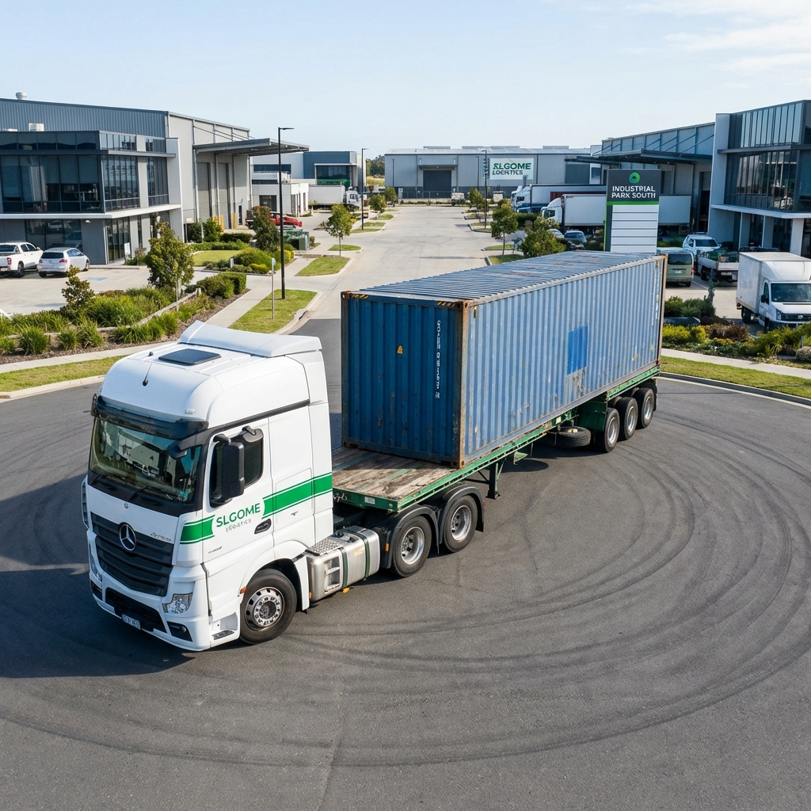

El Puerto de Manzanillo continúa siendo la puerta de entrada más importante para el comercio con Asia en México. Sin embargo, para 2026, el incremento en el volumen de carga y las nuevas normativas aduaneras presentan retos significativos para las empresas. Optimizar los costos no es solo cuestión de buscar la tarifa más baja, sino de una planificación estratégica impecable.
1. Gestión proactiva de Demoras y Almacenajes
Uno de los drenajes financieros más comunes en la logística marítima son los cargos extra por demoras de contenedores y almacenaje en terminal. En SLGOME, recomendamos iniciar el proceso de despacho antes de que el buque atraque.
- Pre-validación de documentos: Asegúrate de que todos los pedimentos y facturas comerciales estén listos 48 horas antes de la llegada.
- Monitoreo en tiempo real: Utilizar herramientas como SmartTrack™ permite anticipar el momento exacto para la recolección, evitando días adicionales de estancia.
2. Consolidación de Carga (LCL) para Empresas con Ambición
No todas las empresas necesitan un contenedor completo (FCL). Para 2026, la consolidación inteligente se ha vuelto vital. Compartir espacio reduce costos drásticamente sin sacrificar tiempos de entrega si se cuenta con un socio logístico que tenga rutas frecuentes desde Manzanillo hacia el centro del país.
3. El papel estratégico de Querétaro
Utilizar bases intermedias como nuestra operación en Querétaro permite un "buffer" logístico. En lugar de enviar la carga directamente al destino final bajo presión, el resguardo estratégico permite una distribución más económica y organizada, especialmente para última milla.
Conclusión
La eficiencia en Manzanillo depende de la visibilidad y la agilidad. En SLGOME Logistics, combinamos nuestra infraestructura en puerto con tecnología avanzada para asegurar que tu carga pase menos tiempo en terminal y más tiempo generando valor para tu negocio.
¿Necesitas asesoría para tu próxima importación?
Nuestros expertos en Manzanillo están listos para ayudarte a reducir costos.
Hablar con un experto